Unidad 2.3 Estructura administrativa del Distrito Capital
El presupuesto distrital se entiende como la manera en la que el Gobierno organiza y distribuye el dinero con la finalidad de cumplir con sus funciones y satisfacer las necesidades de la población a través del gasto público. En la presente Sección se estudiará el concepto de presupuesto y se revisará la estructura del presupuesto de rentas e ingresos y, posteriormente, la del presupuesto de gastos e inversiones, ambos correspondientes al año 2025 el cual se toma como ejemplo.
3.1. Presupuesto de rentas e ingresos
El presupuesto de rentas y recursos de capital es el primer componente del presupuesto del Distrito. En él están contenidos los ingresos que las entidades públicas esperan recibir según las proyecciones para la vigencia fiscal de un año, distribuidos por diversos conceptos. Dentro de esas entidades públicas se encuentran las secretarías de despacho, los establecimientos públicos, entre otros. Este presupuesto está conformado principalmente por ingresos corrientes y recursos de capital; los primeros se dividen en ingresos tributarios y no tributarios, dentro de los no tributarios se encuentran las transferencias de capital por parte de la nación.
Imagen 10. Presupuesto distrital: ingresos y rentas
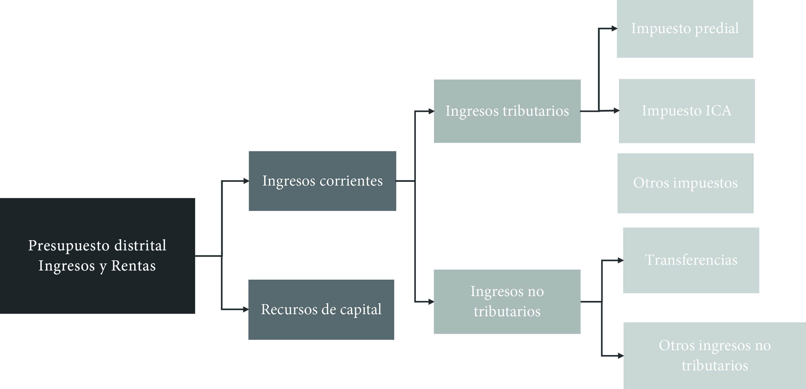
Fuente: Elaboración Sociedad de Mejoras y Ornato de Bogotá3.2. Distribución del presupuesto de rentas e ingresos para la vigencia fiscal 2025
El presupuesto de rentas e ingresos para la vigencia fiscal del año 2025, expedido mediante el Acuerdo Distrital 940 de 20241 , estima que el Distrito recibirá aproximadamente 38,4 billones durante la vigencia del año 2025 equivalentes a cerca de 27 millones de salarios mínimos del año en cuestión, lo cual significa un aumento considerable teniendo en cuenta que en 2024 el presupuesto fue menor en aproximadamente 4 millones de salarios mínimos. Estos 38,4 billones se encuentran divididos entre 15 sectores, subdivididos a su vez entre 44 entidades pertenecientes al sector central, descentralizado, órganos de control o corporaciones públicas administrativas.
Entre tanto, el presupuesto de Colombia para el 2025 es de 523 billones de pesos, en este los ingresos corrientes son de 319,1 billones (61 %) y los recursos de capital 162,8 billones (31 %). En la escala distrital, los recursos de capital tienen una participación similar, sin embargo, los ingresos corrientes representan menos del 50 % del presupuesto de ingresos.
El presupuesto de Bogotá equivale al 7,34 % del presupuesto nacional, a pesar de que Bogotá concentra aproximadamente al 15 % de la población del país, por lo que, en relación con la población, Bogotá cuenta con un presupuesto de ingresos aproximadamente de la mitad respecto a Colombia, mientras el país presupuesta cerca de 10 000 000 de pesos por persona, Bogotá presupuesta 4,8 millones.
Tabla 2. Distribución del presupuesto consolidado para la vigencia fiscal 2025
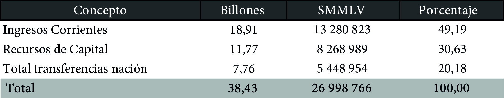
Fuente: Elaboración Sociedad de Mejoras y Ornato de Bogotá con base en Acuerdo Distrital 940 de 2024 y Decreto 470 de 2024Según el Acuerdo Distrital 940 la administración central conforma el 90 % de todo el presupuesto de ingresos para el Distrito con 34,6 billones, el presupuesto restante se divide en otras diecinueve entidades y un órgano de control correspondiente a los establecimientos públicos. Esto indica que el 90 % del presupuesto de rentas e ingresos del año 2025 proviene del sector central.
Gráfico 2. Presupuesto del sector central frente a sector descentralizado, 2025
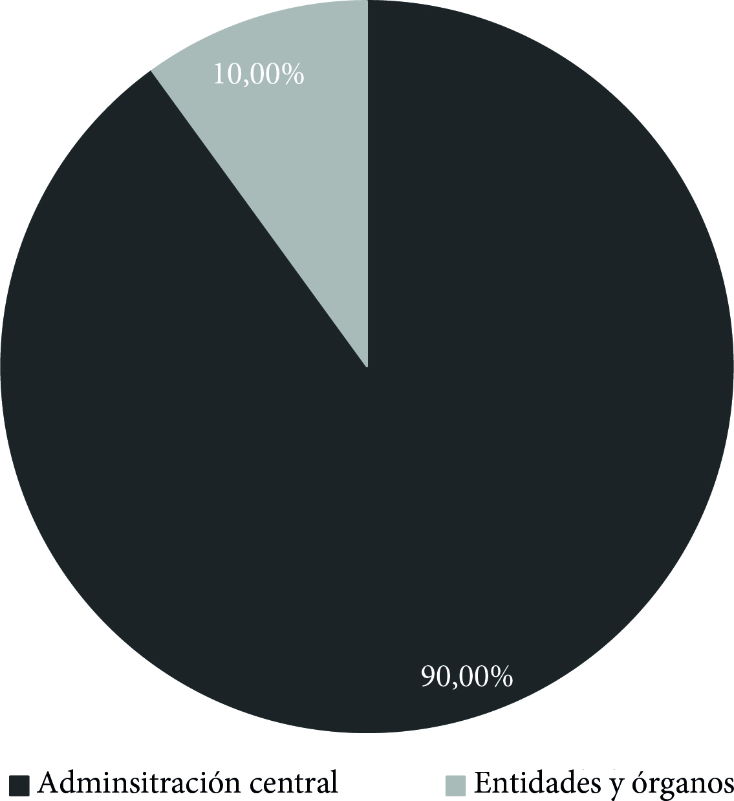
Fuente: Elaboración Sociedad de Mejoras y Ornato de Bogotá con base en Acuerdo Distrital 940 de 2024.
3.3. Presupuesto de ingresos de los establecimientos públicos
El Fondo Financiero de Salud-FFDS es el que cuenta con la mayor asignación presupuestal con 2,1 billones, que equivalen a más de la mitad del presupuesto de estas entidades. Entre el Instituto de Desarrollo Urbano-IDU con 664 mil millones y el Fondo de Prestaciones Económicas, Cesantías y Pensiones-FONCEP con 328 mil millones y la agencia de Educación superior suman el 40 %, es decir que los demás establecimientos solo cuentan con el 10 % del presupuesto de estas entidades.
Tabla 3. Presupuesto de establecimientos públicos 2025
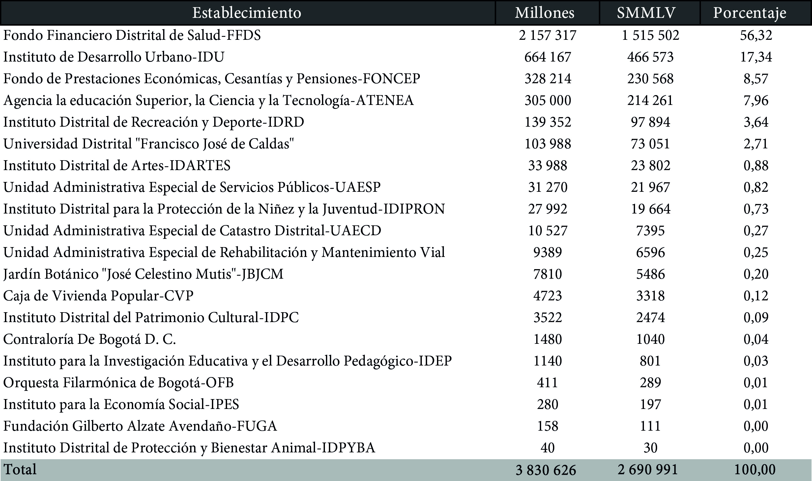
Fuente: Elaboración Sociedad de Mejoras y Ornato de Bogotá con base en Acuerdo Distrital 940 de 2024Gráfico 3. Distribución del presupuesto por entidades públicas y órganos de control 2025
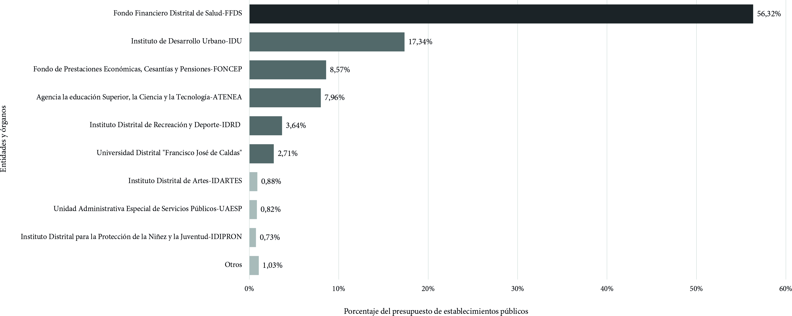
Fuente: Elaboración Sociedad de Mejoras y Ornato de Bogotá con base en Acuerdo Distrital 940 de 20243.4. Fuentes de ingresos durante el 2025
Los ingresos estimados para el 2025 son de 38,4 billones, que se distribuyen en: 26,6 billones de ingresos corrientes, 16,7 billones ingresos tributarios, 2,2 otros ingresos no tributarios, 7,75 de trasferencias de nación y 11,7 billones de recursos de capital.
Imagen 11. Presupuesto distrital: ingresos y rentas 2025
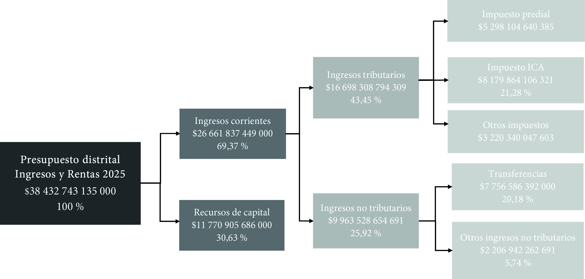
Fuente: Elaboración Sociedad de Mejoras y Ornato de Bogotá con base en Departamento Nacional de Planeación.Los ingresos tributarios están constituidos por el impuesto de Industria y Comercio-ICA que representa el 43,3 %, el Predial, que equivale al 28,5 % y el de vehículos Automotores con 8,7 %. Estos tres rubros suman el 80 % de los ingresos tributarios del Distrito. Otros tributos como la sobretasa a la gasolina, el consumo de cerveza, estampillas de delineación urbana equivalen a un 20 %.
Adicionalmente, es relevante mencionar que Bogotá tiene para este año unos ingresos tributarios de 16,3 billones (11 734 581 SMMLV) y una población de 7 937 898, lo que equivale a una tributación per cápita de 2 103 618 pesos, equivalente a 1,4 salarios mínimos, incremento acorde con el aumento del presupuesto respecto al año anterior, ya que la tributación per cápita era de 1,36 salarios mínimos. Comparando con municipios de la Sabana, Bogotá se encuentra bastante lejos de Cota y Tenjo que tributan más de 3 salarios mínimos por habitante, pero también por encima de municipios vecinos como Soacha cuyo recaudo per cápita es de solamente 0,3 salarios mínimos por habitante.
Entre tanto, los ingresos tributarios en la escala nacional son prácticamente idénticos a los corrientes, conformados principalmente por la Renta, el Impuesto al Valor Agregado-IVA, y el 4x1000. Considerando lo anterior, los ingresos tributarios de Colombia en 2025 son de 319,1 billones, equivalentes a un recaudo tributario per cápita de 6 000 000 de pesos aproximadamente, lo cual corresponde en salarios mínimos a 4,22 SMMLV, es decir, Colombia por habitante ingresa más recursos tributarios que cualquier municipio de la Sabana y el doble que Bogotá.
Tabla 4. Ingresos tributarios 2025
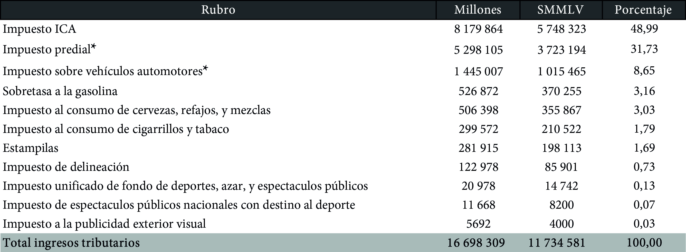
Fuente: Elaboración Sociedad de Mejoras y Ornato de Bogotá con base en Departamento Nacional de PlaneaciónPor su parte, los ingresos no tributarios, que representan cerca de 10 billones, los conforman principalmente las Trasferencias de la Nación con 7,76 Billones y otros ingresos no tributarios con 2,2 billones. Finalmente, los Recursos de Capital, que, con 11,7 billones, representan el 30 % de los ingresos del Distrito.
3.5. Presupuesto de gastos e inversiones
Este documento indica la forma en la que se autoriza el uso de los recursos provenientes de ingresos y rentas. En la planificación del presupuesto de gastos e inversiones debe hacerse partícipe el Consejo Distrital de Política Económica y Fiscal, cuyas atribuciones son adoptar los proyectos de inversión de los organismos del sector central y las entidades descentralizadas; aprobar los anteproyectos del presupuesto de la administración central, establecimientos públicos y entes autónomos universitarios antes de ser enviados al Concejo Distrital 2.
El presupuesto de gastos es el segundo componente del presupuesto público del Distrito. Allí se encuentran todos los egresos que tendrá el Distrito, destinados al funcionamiento, inversión o servicio a deuda. Anteriormente se observó que, tal como lo establecía el Decreto 470 de 2024 y el Acuerdo Distrital 940 de 2024, el presupuesto de rentas e inversiones para el 2025 fue de 38,43 billones.
Tabla 5. Presupuesto anual de gastos
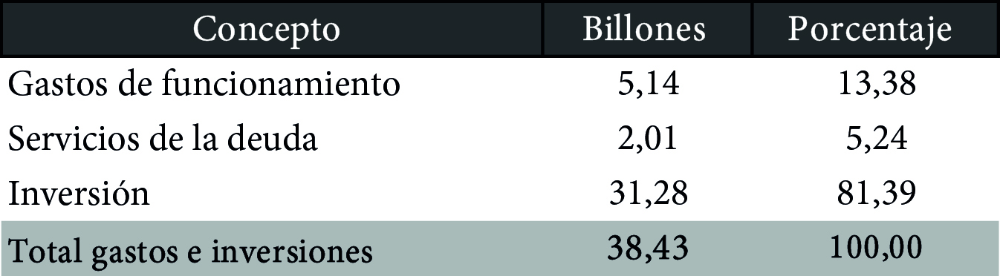
Fuente: Elaboración Sociedad de Mejoras y Ornato de Bogotá con base en Acuerdo 940 de 2024Más del 80 % del presupuesto está destinado a la inversión, cifra considerablemente superior a la del presupuesto de la nación en el que este rubro apenas representa el 15,8 % del total. Los gastos de funcionamiento, con 5,24 billones, equivalen al 13,4 % del total. Cerca del 80 % del presupuesto de gastos e inversión por sectores administrativos corresponde a: Hacienda, Educación, Movilidad y Salud. El presupuesto para los órganos de control: Personería, Contraloría, Concejo y Veeduría asciende a 700 mil millones de pesos, equivalente al 1,86 % del total del presupuesto.
Tabla 6. Presupuesto anual de gastos e inversiones por Sectores
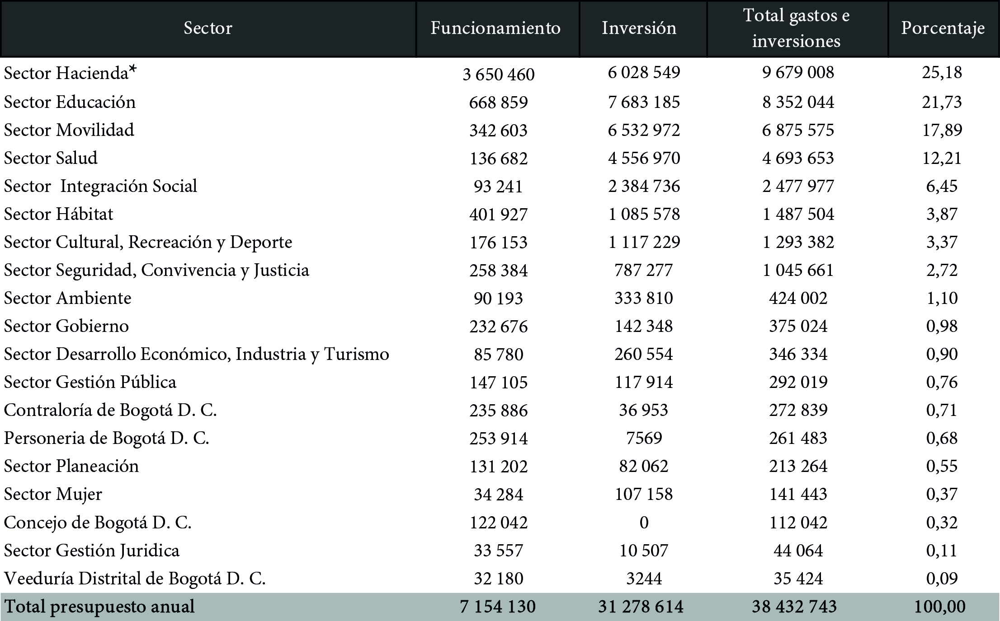
Fuente: Elaboración Sociedad de Mejoras y Ornato de Bogotá con base en Acuerdo Distrital 940 de 2024Por otra parte, es importante considerar que dentro de todos los sectores, las secretarías tienen una participación importante en el presupuesto de gastos e inversiones ya que entre las 15 secretarías representan cerca de 25,5 billones equivalentes al 66,19 %, los restantes 12,9 billones se reparten entre los organismos de control y el resto de las entidades adscritas a los sectores, entre las que se destacan el Fondo Financiero Distrital de Salud con más de 4,5 billones y el IDU con 2,7 billones. Respecto a los entes de control conformados por Veeduría, Concejo, Personería, y Contraloría, tienen una participación en el presupuesto de gastos del 1,8 %, equivalente 0,7 billones aproximadamente.
Tabla 7. Gastos de funcionamiento e inversión por Secretarías
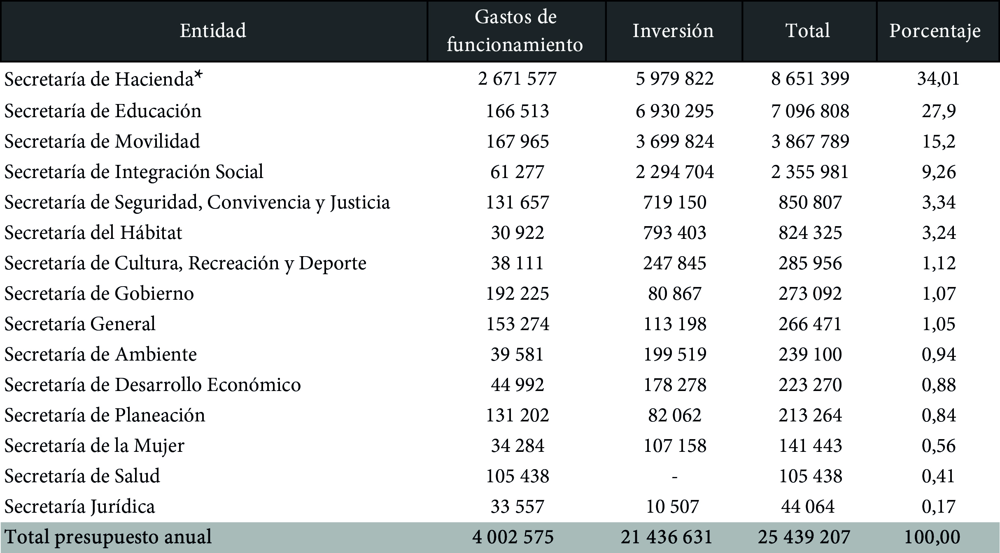
Fuente: Elaboración Sociedad de Mejoras y Ornato de Bogotá con base en Acuerdo Distrital 940 de 20243.6. Total presupuesto de gastos e inversión para el 2025
Al presupuesto de la administración central y de los establecimientos púbicos se le agrega el presupuesto para gastos e inversión de las empresas industriales y comerciales del Estado-EICE, las subredes integradas de Servicios de Salud E.S.E. y los Fondos de Desarrollo Local, cuya labor o prestación de servicios cumplen fines públicos y sociales y supera los 26 billones de pesos.
Tabla 8. Presupuesto total
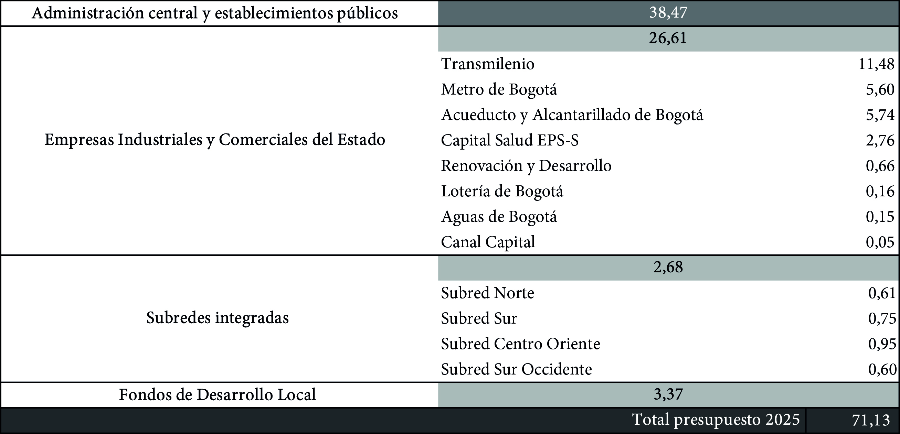
Fuente: Elaboración Sociedad de Mejoras y Ornato de Bogotá con base en Alcaldía Mayor de BogotáGráfico 4. Presupuesto de Bogotá año 2025
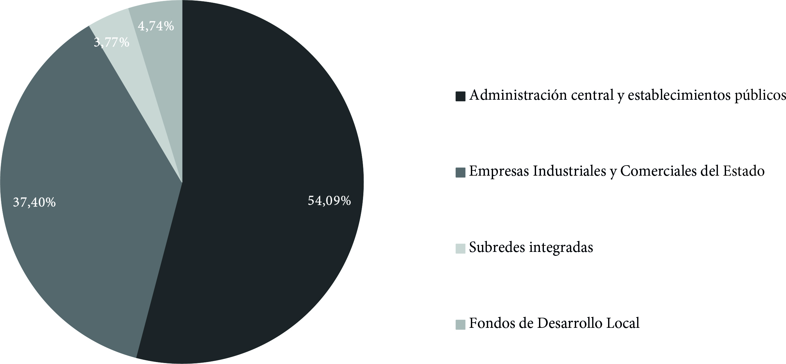
Fuente: Elaboración Sociedad de Mejoras y Ornato de Bogotá con base en Alcaldía Mayor de Bogotá.De esta manera el presupuesto total de gastos e inversión queda en 71,1 billones distribuidos entre la administración central y establecimientos públicos (38,47 billones), EICE (26,61 billones), Subredes integradas (2,68 billones) y Fondos de Desarrollo Local (3,37 billones). El grupo que cuenta con mayor cantidad de recursos presupuestados es la administración central y los establecimientos públicos, con el 54,1 %. En segundo lugar, están las EICE que representan el 37,4 %; de las cuales las Empresas Transmilenio y Metro de Bogotá son las que disponen de mayor cantidad de recursos con 11,4 y 5,6 billones respectivamente, es decir, que sumados a los recursos del sector de movilidad (6,8 billones), el presupuesto total de movilidad es 23,8 billones. En tercer lugar, están los fondos de desarrollo local, con una amplia brecha frente a las dos anteriores, con una asignación del 4,7 %. Por último, el 3,8 % están las cuatro subredes integradas de salud.
Sección 5.1.1 Sistema vial y de transporte Sección 5.1.2 Sistema de Servicios Públicos Sección 5.1.3 Sistema de espacio público Sección 5.2.1 Sistema de equipamientos